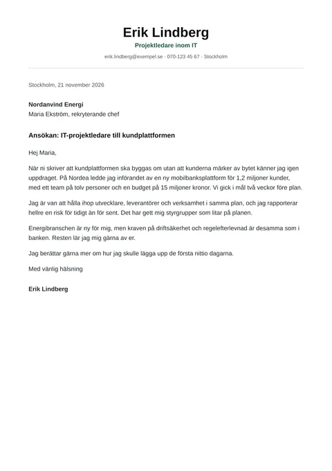

<!-- titel: Skiss artikel med mallvisaren | rum: brev -->
<!--@del brev-exempel-visare-stil-->
<style>
  main img { height: auto; }

  /* artikelns ram är förenklad: den ritas i en egen skiss. Här gäller spalten. */
  .arthuvud { padding: 24px 0 44px; }
  .arthuvud .h1 { max-width: 20ch; margin-top: 14px; }
  .arthuvud .rad { display: flex; flex-wrap: wrap; gap: 6px 16px; margin-top: 18px; font-size: 14.5px; color: var(--vagg-mjuk); }
  @media (min-width: 900px) { .arthuvud { padding: 40px 0 64px; } .arthuvud .h1 { font-size: 54px; } }
  .spalt { width: 100%; max-width: 792px; margin: 0 auto; padding: 36px 16px 64px; }
  .art > * + * { margin-top: 20px; }
  .art > p { font-size: 18px; line-height: 1.7; color: var(--ink-1); }
  .art > p a, .art > ul a { font-weight: 600; text-decoration: underline; text-decoration-thickness: 2px; text-underline-offset: 4px; }
  .art h2 { margin-top: 48px; font-family: var(--disp); font-weight: 800; font-size: 28px; line-height: 1.15; letter-spacing: -0.02em; }
  .art h3 { margin-top: 36px; font-family: var(--disp); font-weight: 700; font-size: 22px; line-height: 1.2; letter-spacing: -0.015em; }
  .art ul { display: grid; gap: 8px; padding-left: 4px; }
  .art ul li { position: relative; padding-left: 22px; font-size: 18px; }
  .art ul li::before { content: ''; position: absolute; left: 0; top: .62em; width: 9px; height: 9px; border-radius: 3px; background: var(--ton-ink); }
  .art blockquote { padding: 20px 20px 22px; border-radius: 6px; background: var(--papper); border: 2px solid var(--kant); border-left: 6px solid var(--ton-ink); }
  .art blockquote p { font-family: Georgia, 'Times New Roman', serif; font-size: 16.5px; line-height: 1.65; }
  .art blockquote p + p { margin-top: 12px; }
  .art .snabb { padding: 22px; border-radius: var(--r-kort); background: var(--ton); border: 2px solid var(--kant-stark); border-bottom-width: 6px; }
  .art .snabb h2 { margin-top: 0; font-size: 21px; }
  .art .snabb p { margin-top: 10px; font-size: 16px; line-height: 1.6; color: var(--ink-2); }
  @media (min-width: 900px) { .spalt { padding-top: 56px; padding-bottom: 96px; } .art h2 { font-size: 36px; } .art h3 { font-size: 25px; } .art blockquote { padding: 28px 32px; } }

  /* reklamrutan för personliga brev: en plats, hållen enkel */
  .art .reklam { position: relative; isolation: isolate; overflow: hidden; display: grid; gap: 4px; margin-top: 32px !important; margin-bottom: 12px; padding: 22px 20px 0; border-radius: 26px; background: var(--vagg); color: var(--vagg-ink); box-shadow: 0 8px 0 var(--vagg-3); }
  .art .reklam::before { content: ''; position: absolute; z-index: -1; right: -20%; top: -40%; width: 70%; aspect-ratio: 1; border-radius: 50%; background: var(--vagg-2); opacity: .6; }
  .art .reklam .text > * + * { margin-top: 12px; }
  .art .reklam .ey { color: var(--koppar-ljus); }
  .art .reklam .rub { font-family: var(--disp); font-weight: 800; font-size: 25px; line-height: 1.12; letter-spacing: -0.02em; color: var(--vagg-ink); }
  .art .reklam .text p { font-size: 16px; line-height: 1.55; color: var(--vagg-mjuk); }
  .art .reklam .text .ey { font-size: 12.5px; line-height: 1.3; color: var(--koppar-ljus); }
  .art .reklam .text .rub { font-family: var(--disp); font-weight: 800; font-size: 25px; line-height: 1.12; letter-spacing: -0.02em; color: var(--vagg-ink); }
  .art .reklam .text .paket { font-size: 13.5px; }
  .art .reklam .bild p { font-size: 8.5px; line-height: 1.55; color: #33333A; }
  .art .reklam a.knapp { font-weight: 700; text-decoration: none; }
  .art .reklam .knapp { margin-top: 18px; text-decoration: none; }
  .art .reklam .paket { font-size: 13.5px; }
  .art .reklam .bild { position: relative; height: 150px; margin-top: 18px; }
  .art .reklam .bild .ark { position: absolute; left: 8%; right: 8%; top: 0; transform: rotate(-2deg); padding: 6% 7%; }
  .art .reklam .bild .ark .namn { font-size: 17px; }
  .art .reklam .bild .ark p { font-size: 8.5px; }
  .art .reklam .bild .chip { position: absolute; z-index: 2; right: 4%; top: 98px; height: 32px; background: var(--koppar); color: var(--koppar-text); box-shadow: 0 4px 0 var(--koppar-klack); font-size: 13.5px; }
  @media (min-width: 700px) { .art .reklam { grid-template-columns: 1.25fr .75fr; gap: 28px; padding: 30px 30px 0; } .art .reklam .text { padding-bottom: 30px; } .art .reklam .text .rub { font-size: 29px; } .art .reklam .bild { height: auto; margin-top: 0; } .art .reklam .bild .ark { left: 0; right: -12%; top: 16px; transform: rotate(3deg); } .art .reklam .bild .chip { right: 0; top: auto; bottom: 34px; } }

  .mvhall { margin-top: 28px !important; margin-bottom: 12px; }

  .skissnot { margin-top: 32px !important; padding: 14px 16px; border-radius: 16px; border: 2px dashed var(--koppar); background: #FFF7F0; color: var(--koppar-text); font-size: 14.5px; line-height: 1.5; }
  .skissnot b { display: block; font-size: 12.5px; letter-spacing: .09em; text-transform: uppercase; color: var(--koppar-ink); }
</style>

<!--@del nav-->

<main>
  <section class="vagg arthuvud">
    <div class="spalt" style="padding-top:0;padding-bottom:0">
      <nav class="brod" aria-label="Breadcrumb"><a href="#">Hem</a><span><a href="#">Artiklar</a></span><span>Hur skriver man ett personligt brev?</span></nav>
      <h1 class="h1">Hur skriver man ett personligt brev? Steg för steg</h1>
      <p class="rad"><span>Teamet på jobbcoach.ai</span><span>Uppdaterad 15 november 2026</span></p>
    </div>
  </section>

  <div class="spalt">
    <article class="art">
      <div class="snabb"><h2>Snabbsvar: hur skriver man ett personligt brev?</h2><p>Lägg 15 minuter på research i annonsen och företaget innan du skriver. Bygg sedan brevet i tre delar: en inledning på två meningar med en företagsspecifik krok, en huvuddel där du tar ett krav per stycke och styrker det med ett konkret exempel och en siffra, och en avslutning med nästa steg. Håll det på max en A4-sida, gärna kortare, som Academic Work rekommenderar. Vår tumregel är 250 till 400 ord. Spara som PDF. Skriv om annonsens krav, inte om dig själv i allmänhet.</p></div>

      <p>Den här artikeln är en walkthrough. Vi följer Anna Lindberg från det att hon ser en jobbannons hos Byggbolaget AB tills hon klickar skicka 90 minuter senare. Både Anna och företaget är påhittade, men stegen är desamma som du själv tar. Du får hennes färdiga brev, exakt vilka steg hon gjorde, och varför.</p>
      <p>Vill du först förstå strategin bakom varför vissa brev funkar 2026, läs vår <a href="#">breda guide om att skriva personligt brev</a>. Den här artikeln handlar om hantverket: så här gör du, konkret.</p>

      <!-- Reklamrutan för personliga brev, efter andra stycket. Rubriken är ett stycke, aldrig h2 eller h3. -->
      <aside class="reklam" aria-label="Personliga brev hos Jobbcoach">
        <div class="text">
          <p class="ey">Personliga brev</p>
          <p class="rub">Skriv det personliga brevet på annonsen, inte på mallen</p>
          <p>Klistra in annonsen, välj ton, vi skriver utkastet utifrån ditt CV. Ett personligt brev var sjunde dag att läsa på skärmen, gratis.</p>
          <a class="knapp" href="#">Skriv mitt personliga brev <svg viewBox="0 0 24 24"><use href="#i-pil"/></svg></a>
          <p class="paket">Personliga brev utan tak, som PDF, ingår i Premium, 149 kr i månaden.</p>
        </div>
        <div class="bild" aria-hidden="true">
          <div class="ark brevark">
            <div class="namn">Sara Lindström</div>
            <h5>Ansökan: projektledare</h5>
            <p>När ni söker en projektledare som håller ihop upphandling och tidplan känner jag igen mina senaste tre år, där jag ledde en ombyggnad <mark>inom budget på 42 miljoner</mark>.</p>
            <p>Ni skriver att rollen kräver vana vid <mark>offentlig upphandling enligt LOU</mark>. Jag har drivit fyra sådana.</p>
            <i class="l"></i><i class="l m"></i><i class="l k"></i><i class="l"></i><i class="l m"></i><i class="l"></i><i class="l k"></i><i class="l m"></i>
          </div>
          <span class="chip">3 av 4 krav har fått svar</span>
        </div>
      </aside>

      <p>Räkna med 60 till 90 minuter om du gör det ordentligt. Det är skillnaden mellan ett brev som hamnar i nej-högen och ett som leder till intervju.</p>

      <div class="skissnot"><b>Skissblad</b>Här står artikelns avsnitt om research, brevets fem delar och Annas brev som växer fram. De är orörda och hoppas över i skissen.</div>

      <h2>Annas färdiga brev</h2>
      <p>Här är allt sammansatt:</p>
      <blockquote>
        <p>Anna Lindberg<br>anna.lindberg@example.com · 070-456 78 90</p>
        <p>12 maj 2026</p>
        <p>Hej rekryterande chef,</p>
        <p>Det som fick mig att söka projektingenjörsrollen hos Byggbolaget var ert vunna tunnelbanekontrakt. Det är samma typ av storskaliga anläggningsprojekt jag drivit de senaste fem åren.</p>
        <p>Som biträdande projektledare för Norrstråkets omvandling 2019-2021 ansvarade jag för ett anläggningsprojekt på 380 miljoner med elva parallella underentreprenörer. Den största utmaningen var koordinering vid skiftbyten, så jag införde ett digitalt incheckningssystem som halverade tidsspillet och gav oss bättre realtidsdata om var varje team var. Det blev sedan standard på fyra andra projekt i företaget.</p>
        <p>Jag berättar gärna mer i en intervju. Du når mig på 070-456 78 90.</p>
        <p>Med vänliga hälsningar<br>Anna Lindberg</p>
      </blockquote>
      <p>Lägg märke till tre saker. Inget stycke börjar med "Jag". Det finns siffror på flera ställen. Varje stycke har ett tydligt syfte och hänger ihop med kraven i annonsen.</p>

      <h3>Se hur det fungerar i praktiken</h3>
      <p>Det hjälper också att se ett färdigt brev i en mall. Här är ett exempel för säljare som du kan se i fem olika mallar:</p>

      <!-- Mallvisaren i artikelspalten: inga rubriker, inga kronor, ingen spärr. Linne står i HTML. -->
      <div class="mvhall">
        <div class="mv" data-mv-kontext="artikel">
          <div class="mv-scen">
            <div class="mv-topp"><p class="mv-kick">Samma brev i fem mallar</p></div>
            <div class="mv-bord">
<!--@del brev-exempel-minirad-->
              <div class="mv-bunt">
                <span class="mv-kik mv-kik-h" aria-hidden="true"></span>
                <div class="mv-ark" role="img" aria-label="Personligt brev för säljare i mallen Linne">
<!--@del brev-artikel-a4-->
                </div>
              </div>
            </div>
          </div>
          <div class="mv-sockel">
            <p class="mv-namnrad" aria-live="polite"><b>Linne.</b> <span>Gratis, även som Word.</span></p>
            <a class="mv-lank" href="#">Skriv ditt eget brev <svg viewBox="0 0 24 24" fill="none" stroke="currentColor" stroke-width="2.2" stroke-linecap="round" stroke-linejoin="round"><path d="M5 12h14M13 6l6 6-6 6"/></svg></a>
            <p class="mv-fot">Det här är fem av 40 mallar. Med ett konto provar du alla med ditt eget brev. <a href="#">Se alla 40 mallar</a></p>
            <details class="mv-text" open>
              <summary>Läs brevet som text</summary>
              <div class="mv-text-brev">
                <p class="mv-text-huvud"><b>Marcus Lindqvist</b> till Telia Sverige AB<br>Ansökan: Account Manager B2B</p>
                <p>Hej,</p>
                <p>Jag söker tjänsten som Account Manager B2B på Telia. Med sex års erfarenhet av B2B-försäljning inom telekom och IT har jag konsekvent överträffat säljmål och byggt långsiktiga kundrelationer som genererat merförsäljning.</p>
                <p>På min nuvarande tjänst hos Telenor ansvarar jag för en kundportfölj värd 45 MSEK årligen. Under 2024 ökade jag försäljningen med 23% genom strategisk bearbetning av befintliga kunder och identifiering av nya affärsmöjligheter. Mitt arbetssätt bygger på att förstå kundens verksamhet på djupet innan jag presenterar lösningar.</p>
                <p>Vad som tilltalar mig med Telia är er satsning på 5G-lösningar för företag och ert fokus på hållbar digitalisering. Jag vill vara med och hjälpa svenska företag att ta nästa steg i sin digitala transformation.</p>
                <p>Jag ser fram emot att diskutera hur jag kan bidra till Telias fortsatta framgång.</p>
                <p>Med vänlig hälsning<br>Marcus Lindqvist</p>
              </div>
            </details>
          </div>
        </div>
      </div>

      <p>Vi har samlat exempel för 89 yrken. Några populära:</p>
      <ul>
        <li><a href="#">Personligt brev för Student</a></li>
        <li><a href="#">Personligt brev för Sjuksköterska</a></li>
        <li><a href="#">Personligt brev för Undersköterska</a></li>
      </ul>
      <p><a href="#">Bläddra alla yrkesexempel</a></p>

      <h2>Formatera så det ser ut som ett brev</h2>
      <p>Innehållet är klart. Nu kommer detaljerna som många slarvar med och som faktiskt syns.</p>

      <div class="skissnot"><b>Skissblad</b>Resten av artikeln, frågorna och slutkortet står kvar. Reklamrutans övriga platser och varianter ritas i skissen artikelreklam.</div>
    </article>
  </div>
</main>

<!--@del fot-->
